Schéma → cours avec mots clés à placer → flash P1/P2/P3. Contenu barré exclu.
P1
P2
P3
⭐ fréquence concours
1. L’appareil cardio-circulatoire P1
Souvent tombé Deux circulations en série ; hématose ; polarité O₂ inverse en petite circ.
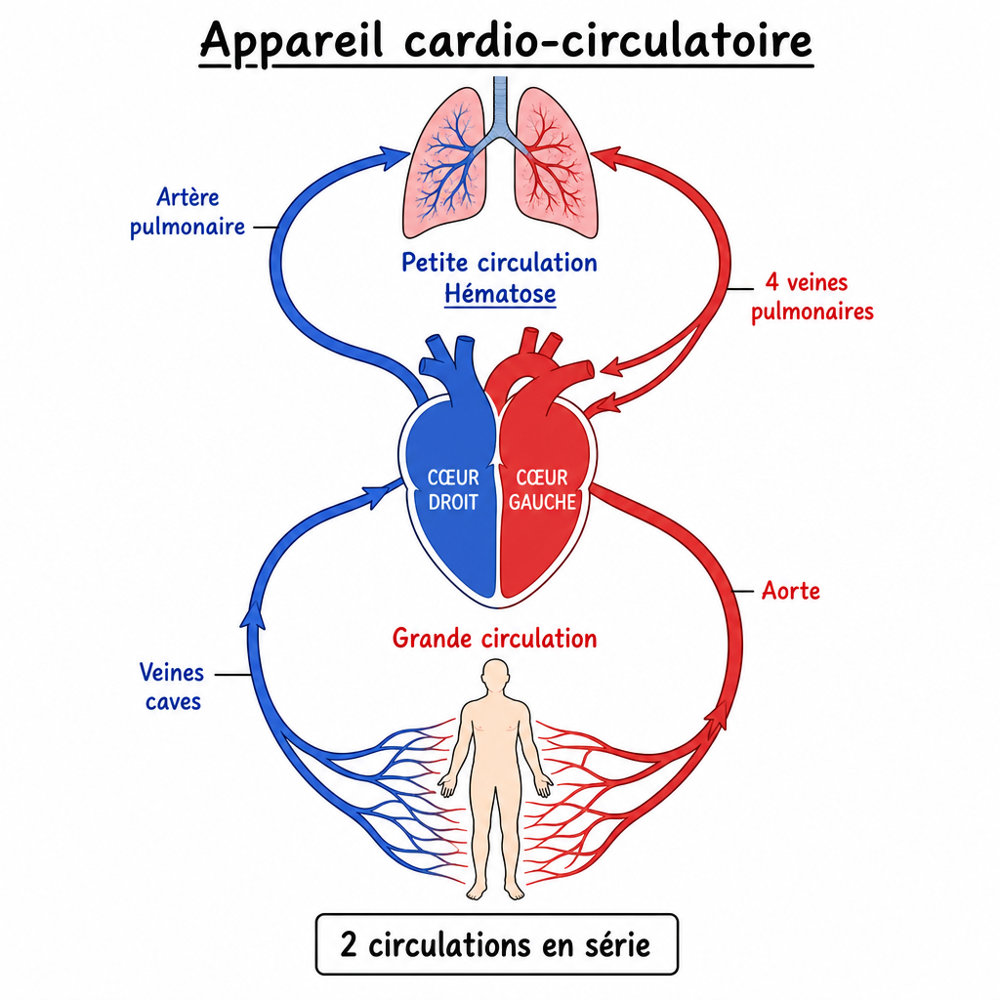
- 2 circulations branchées en ⭐, forme de 8.
- Grande : organes en sang oxygéné ⭐⭐ · artères depuis cœur gauche via · retour veineux au cœur droit via .
- Petite = ⭐⭐⭐ (via échanges gazeux ⭐⭐) : cœur droit → poumons par ⭐ · retour O₂ par ⭐ (dont VP supérieures D et G ⭐).
- Piège : en petite circ., l’artère porte du sang en O₂ (inverse de la grande).
hématose
4 veines pulmonaires
série
pauvre
veines caves
aorte
artère pulmonaire
2. Situation du cœur P2
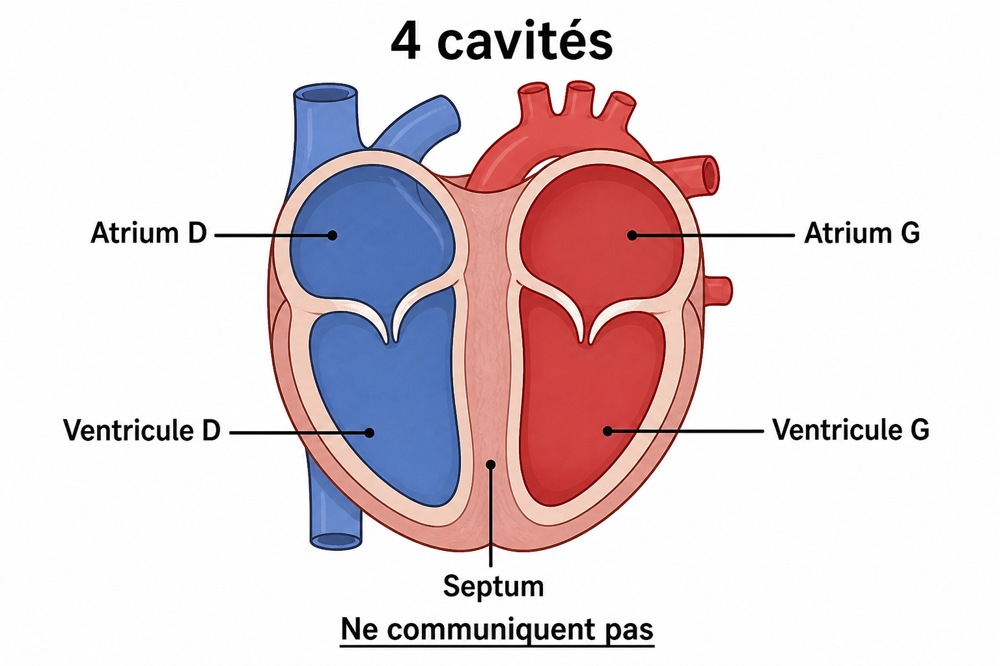
- Muscle creux dans le thorax ⭐ : ⭐⭐, à gauche du bord droit du sternum.
- Projection : 3e–6e EIC · vertèbres ⭐.
- 4 cavités (2 atriums + 2 ventricules) séparées par un septum étanche : elles ⭐⭐⭐.
- Cœur droit = sang · cœur gauche = sang .
oxygéné
T6 à T8
médiastin antérieur
désoxygéné
ne communiquent pas
3. Le thorax P2
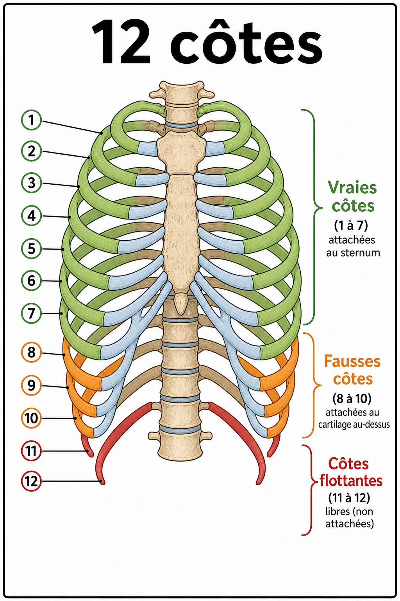
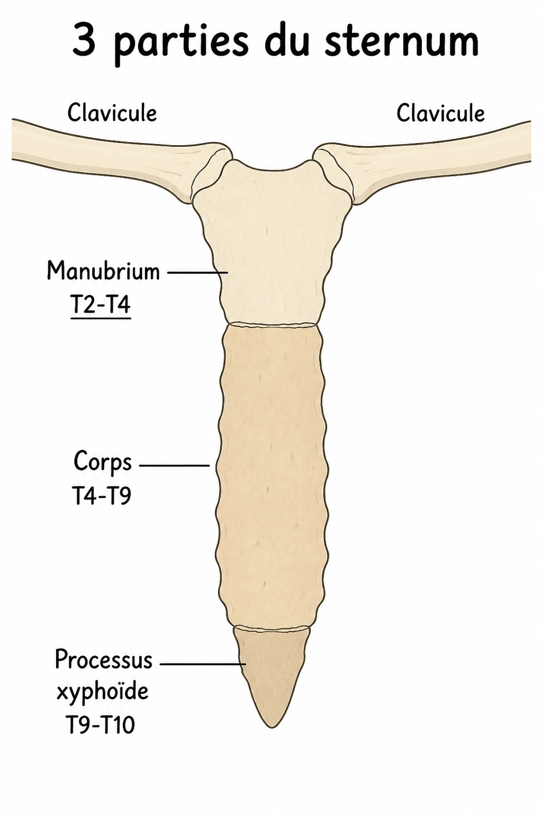
- Cage ostéo-cartilagineuse : rachis T · 12 côtes · plastron sterno-costal · diaphragme en bas.
- Côtes = vraies (direct) · = fausses (indirect) · = flottantes.
- Sternum : (sup., proj. ⭐) · · processus xyphoïde.
corps
8 à 10
manubrium
11 et 12
T2–T4
1 à 7
4. Le diaphragme P1
Souvent tombé Section la plus dense : digastrique, coupoles, 3 hiatus T12/T10/T9.

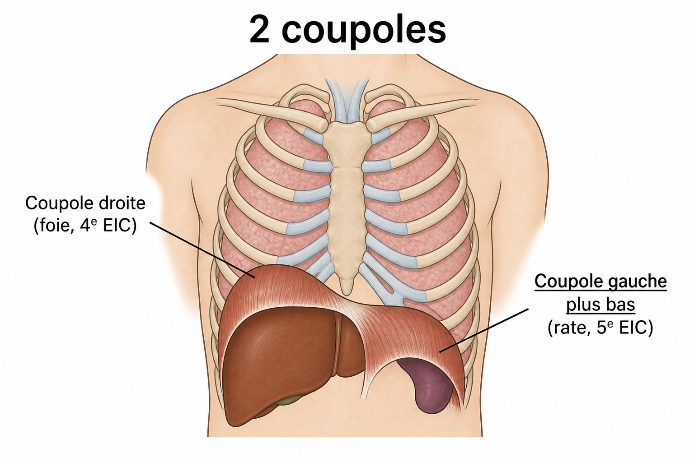
- Muscle ⭐⭐ : centre tendineux ⭐ (trèfle à 3 folioles) + périphérie musculaire.
- Partie sternale : face postérieure du ⭐⭐ · partie ⭐ (cartilages + lig. arqué ) · partie ⭐ (piliers L3–L1 / L2–L1 + lig. arqué + ).
- Coupole plus bas ⭐ (rate < foie).
- Innervé par 2 nerfs ⭐ (racine ) · inspiration active / expiration passive.
C4
digastrique
gauche
xyphoïde
phréniques
costale
vertébrale
latéral
médian
médial
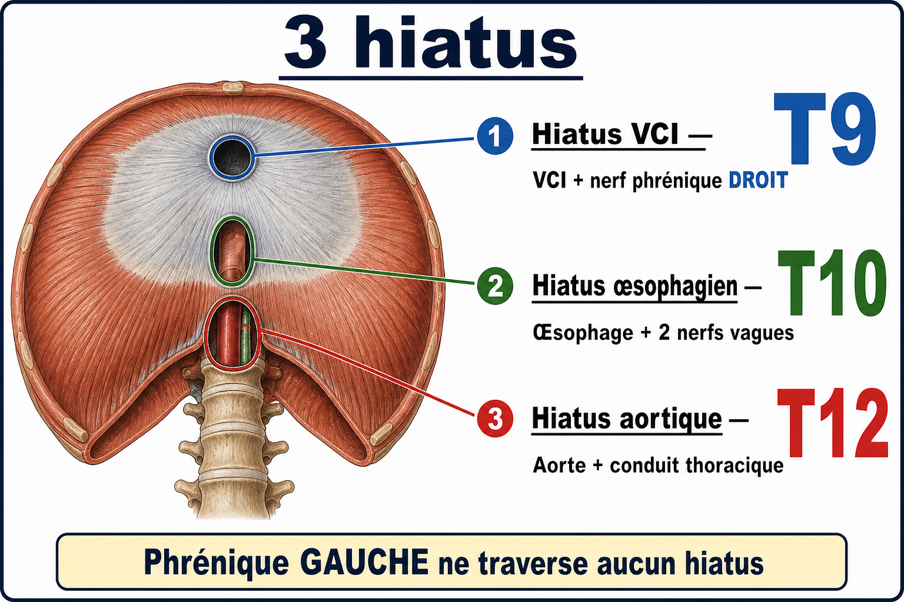
- Aortique ⭐⭐ : ⭐ · aorte + ⭐⭐ · (inextensible).
- Œsophagien ⭐⭐ : · œsophage + 2 ⭐⭐ · (extensible, fronde anti-reflux).
- VCI ⭐⭐ : ⭐⭐ · VCI ⭐ + nerf ⭐⭐ · fibreux. Nerf ⭐ ne traverse aucun hiatus.
Attention / piège Plus le contenu est « rigide », plus le hiatus est bas : T12 aorte · T10 œsophage · T9 VCI.
T10
phrénique gauche
T12
musculaire
conduit thoracique
T9
nerfs vagues
fibreux
phrénique droit
5. Le médiastin P2
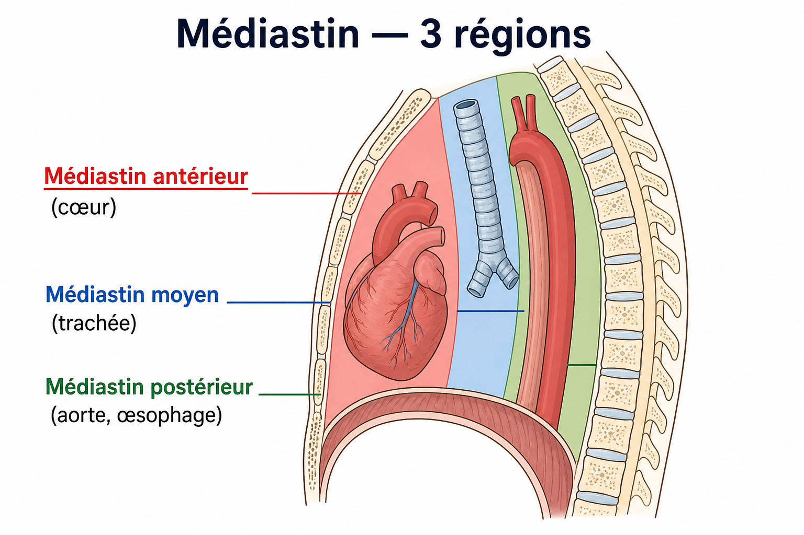
- Partie centrale du thorax ⭐ entre les 2 (tous les viscères sauf poumons).
- Antérieur : + péricarde + gros vaisseaux.
- Moyen : ⭐ (jusqu’à T5 ⭐) + bronches souches.
- Postérieur : , œsophage, conduit thoracique, azygos.
trachée
cœur
aorte thoracique descendante
cavités pleurales
6. Morphologie externe P2
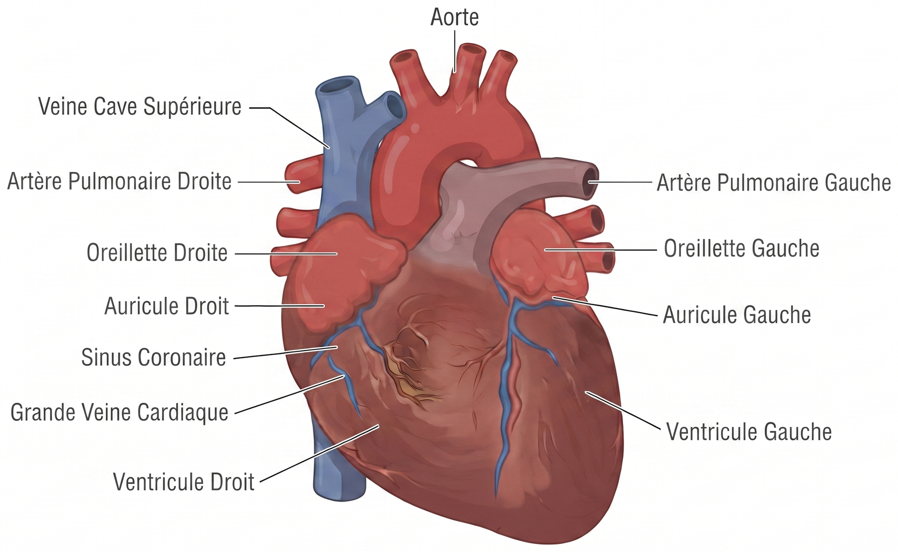
- Vue antérieure : surtout le cœur .
- Pyramide : faces sterno-costale, ⭐⭐, pulmonaire.
- Grand axe en avant, à gauche et en bas ⭐.
- Sillons (inter-atriaux, inter-ventriculaires, atrio-ventriculaires) · = expansions des atriums.
auricules
diaphragmatique
droit
oblique
7. Cavités ↔ vaisseaux P1
Souvent tombé Veines caves / 4 VP / AP / aorte — à coller sur chaque cavité.
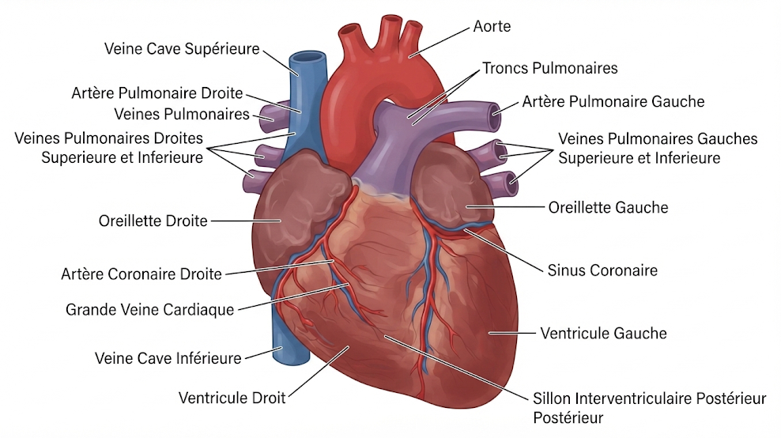
- Vue postérieure : surtout le cœur .
- Atrium D ← ⭐⭐⭐ · VD → ⭐ (div. à T5).
- Atrium G ← ⭐⭐⭐ (sup. D + G ⭐) · VG → ⭐⭐⭐.
aorte
veines caves
4 veines pulmonaires
gauche
artère pulmonaire
8. Morphologie interne P1
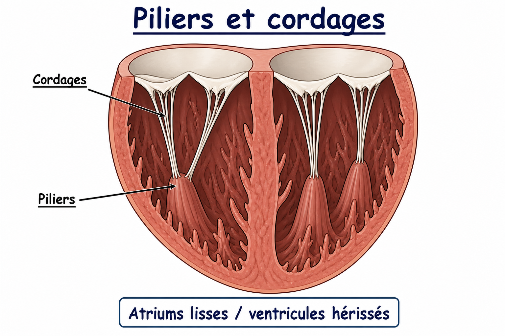
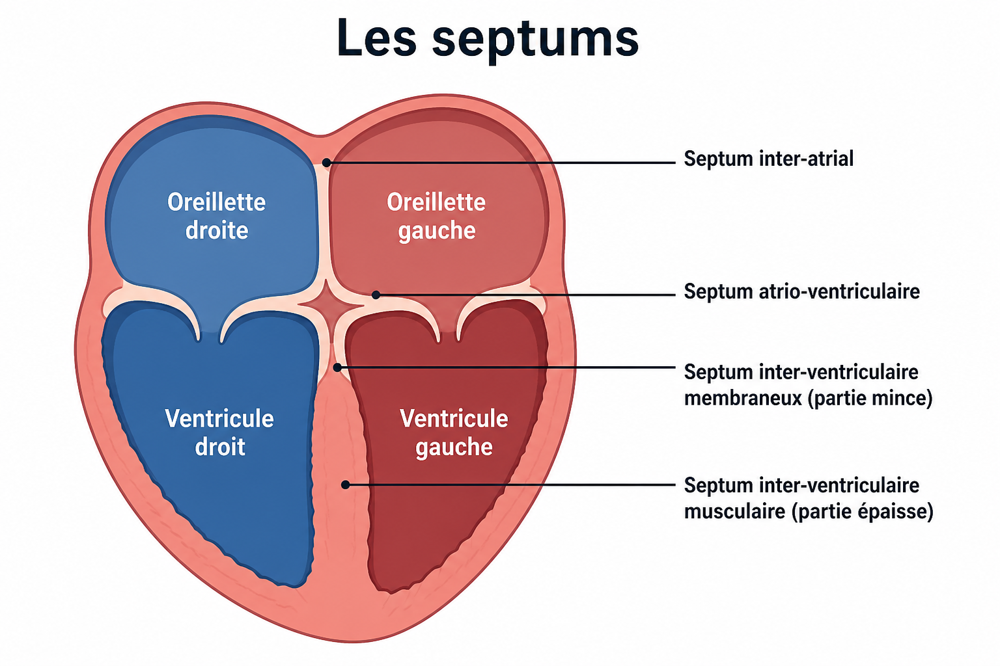
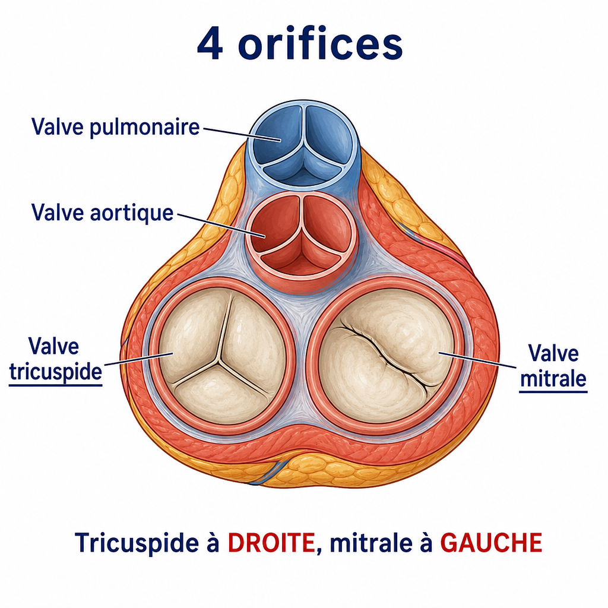
- Atriums : face ⭐ · ventricules : saillies · ⭐ → ⭐ des valves AV.
- Septums : inter-atrial · atrio-ventriculaire · inter-ventriculaire (musculaire + membraneux).
- Valve (AD–VD, 3 cuspides) ⭐ · (AG–VG, bicuspide) ⭐⭐.
- Sigmoïdes : (VD–AP) · (VG–aorte).
Attention / piège Tricuspide à droite · mitrale à gauche — ne pas intervertir.
aortique
piliers
mitrale
lisse
pulmonaire
tricuspide
cordages
9. Les 3 tuniques P1
- Int. → ext. : ⭐⭐ (lisse ; replis → AV ⭐⭐) · (muscle strié ⭐ + cardionecteur) · ⭐ (fibro-séreuse ⭐).
- Péricarde séreux : ⭐⭐ (= épicarde) + ⭐⭐ + cavité virtuelle.
péricarde
épicarde
endocarde
pariétal
valves
myocarde
10. Système cardionecteur P2
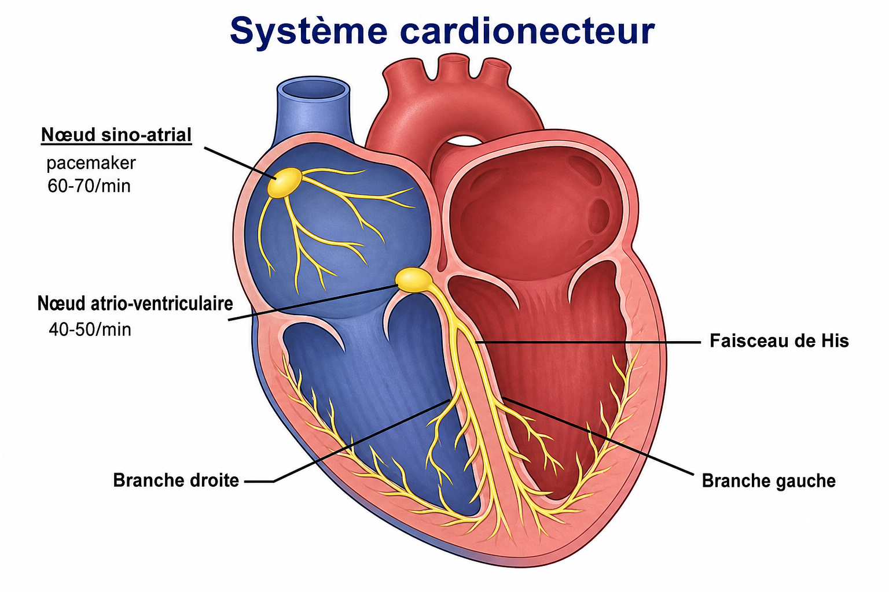
- Contractilité autonome. Point d’origine / pacemaker = nœud ⭐⭐ (atrium D) : /min · atriums.
- Nœud : /min → faisceau de (2 branches) → ventricules.
His
60 à 70
sino-atrial
40 à 50
atrio-ventriculaire
11. Vascularisation du cœur P2
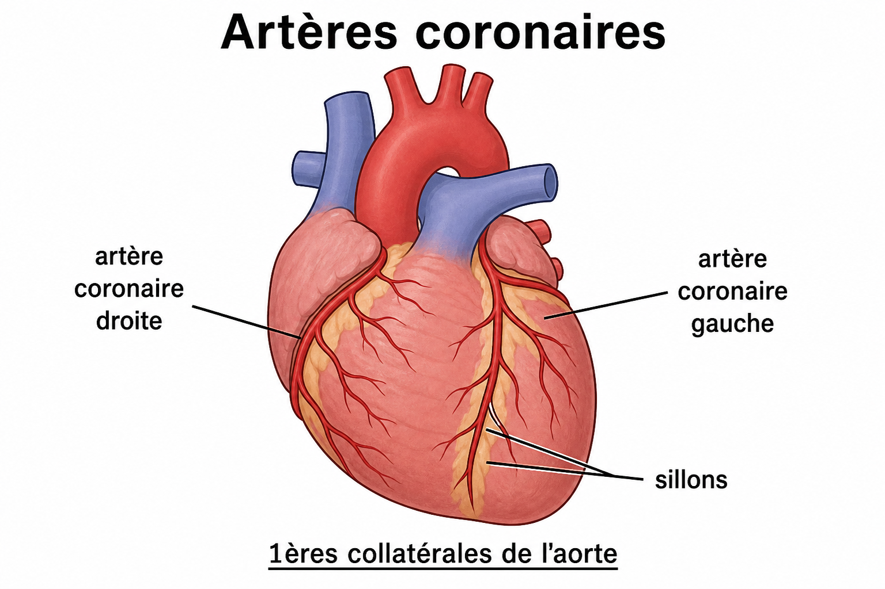
- Artères D/G = 1ères collatérales de l’ ⭐⭐ · cheminent dans les ⭐ · perforent les septums · réseau anastomotique.
- Obstruction → ischémie → / angor / IDM (coronographie).
nécrose
aorte
coronaires
sillons
12. Rapports du cœur P3
- Bas : · latéral : espaces · avant : · arrière : médiastin post. () + rachis.
œsophage
plastron sterno-costal
diaphragme
pleuro-pulmonaires
13. Anatomie fonctionnelle P3
- Systole = des ventricules : valves AV , artérielles .
- Diastole = : l’inverse (AV ouvertes, artérielles fermées).
remplissage
fermées
vidange
ouvertes
14. La grande circulation P2
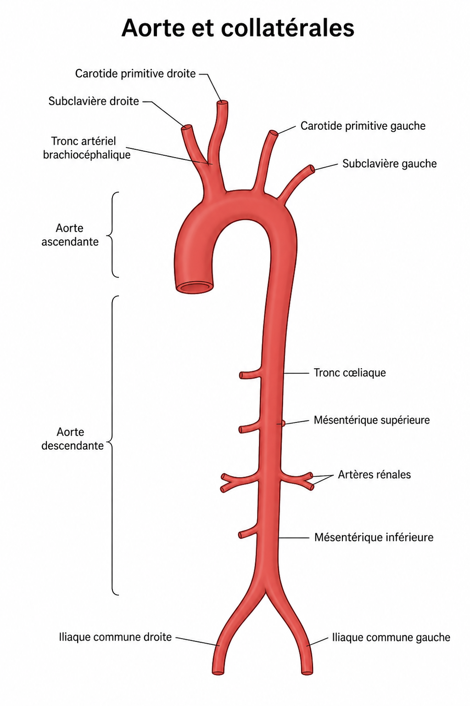
- Aorte ascendante → · arc (en regard de ) : tronc , carotide primitive G, subclavière G.
- Abdominale : cœliaque, mésentériques, rénales → iliaques communes.
- Veineux : cave · azygos · système intercalé entre ⭐.
2 réseaux capillaires
T4
porte
brachiocéphalique
coronaires
15. Système lymphatique P3
- Parallèle au sang · rejoint in fine le système .
- Vaisseaux → (liquide interstitiel) · nœuds lymphatiques · rôle immunitaire (rate, thymus).
- 🆕 Aussi voie d’expansion des .
cancers
lymphe
veineux
Flashcards — fin de fiche
Classées par priorité.
P1 — à maîtriser en priorité
Hiatus aortique : niveau + contenu ?
T12 · aorte + conduit thoracique · fibreux.
Hiatus œsophagien : niveau + contenu ?
T10 · œsophage + 2 nerfs vagues · musculaire (anti-reflux).
Hiatus VCI : niveau + contenu ?
T9 · VCI + phrénique droit · fibreux. Phrénique G = aucun hiatus.
Cœurs D/G communiquent ?
Non (septum étanche) ⭐⭐⭐. D = désoxygéné · G = oxygéné.
Petite circulation = ?
Hématose ⭐⭐⭐ via échanges gazeux ⭐⭐. AP pauvre / VP riches (dont sup. D/G ⭐).
Vaisseaux par cavité ?
AD←caves · VD→AP · AG←4 VP · VG→aorte.
3 tuniques (int. → ext.) ?
Endocarde · myocarde · péricarde (épicarde = feuillet viscéral).
Tricuspide vs mitrale ?
Droite (3) vs gauche bicuspide (2) ⭐⭐.
Diaphragme : type + innervation ?
Digastrique ⭐⭐ · 2 phréniques (C4).
P2 — à bien connaître
Projection du cœur ?
Médiastin antérieur · T6–T8 · 3ᵉ–6ᵉ EIC.
Vue ant. vs post. ?
Ant. = cœur droit · post. = cœur gauche.
Pacemaker + rythme ?
Nœud sino-atrial ⭐⭐ · 60–70/min.
Coronaires = ?
1ères collatérales de l’aorte ⭐⭐ · dans les sillons.
Côtes 1–7 / 8–10 / 11–12 ?
Vraies / fausses / flottantes.
Système porte ?
Intercalé entre 2 réseaux capillaires ⭐.
P3 — lecture attentive
Systole vs diastole (valves) ?
Systole : AV fermées, artérielles ouvertes · diastole = inverse.
Diaphragme : 3 parties d’insertion ?
Sternale (xyphoïde ⭐⭐) · costale ⭐ (lig. arqué latéral) · vertébrale ⭐ (piliers + lig. arqués médian et médial).
Lymphatique 🆕 ?
Voie d’expansion des cancers (+ immunité).
Modèle figé — dis « publie » pour le téléphone.